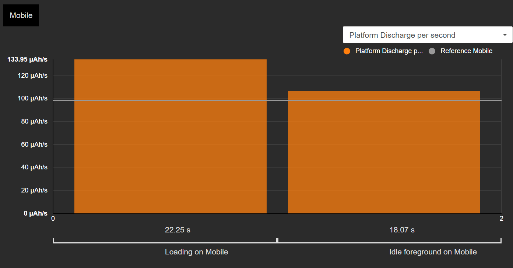
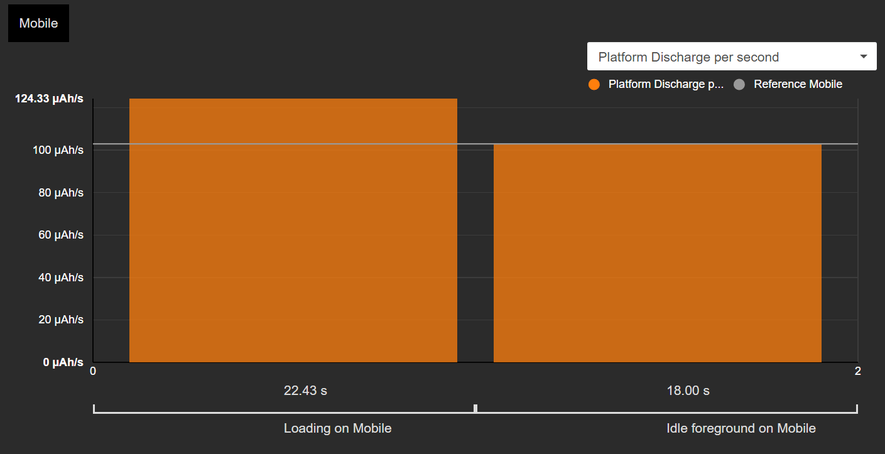
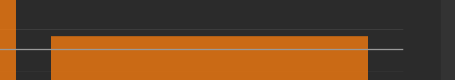
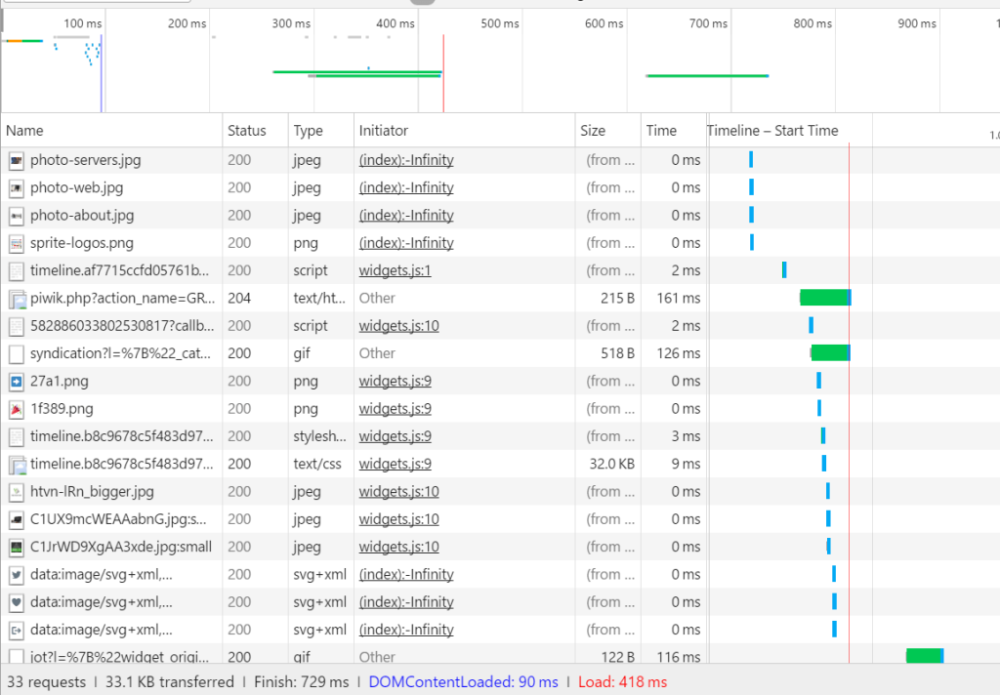
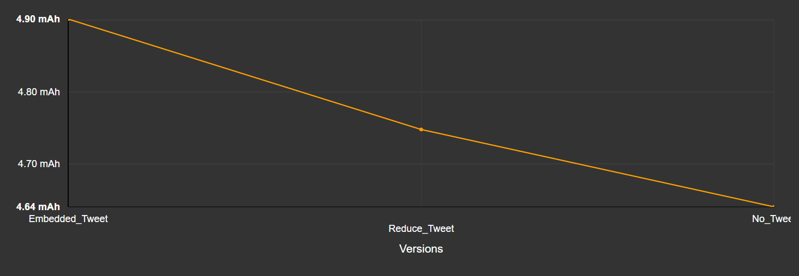

Depuis des années déjà, les développeurs websavent que les composants tierssont susceptibles d’avoir un impact négatif sur la performance des sites internet. Steve Soudersa publié en 2010 un article de blogà ce propos, mentionnant des composants tierscomme ceux de Twitterou encore Facebook. Suite à ça, beaucoup d’influenceurs ont écrit sur le sujet.
En effet, ces dernières années le management de la performance web et du temps de chargement a pris place dans la culture des développeurs web. L’intégration des composants tiers, quant à elle, s’est développée encore plus rapidement dans le but de :
- aider les entreprises à comprendre le comportement des utilisateurs (analytics, A/B testing, RUM…),
- générer du contenu dynamique (social media plug-ins…),
- intégrer un contenu externe riche (cartes, services…),
- générer des revenus (tracking, publicités…),
- …etc (insérez votre préférence personnelle ici).
Aujourd’hui, les applications mobiles et pages Internet (tout du moins celles basées sur une architecture hybride comme Cordova, Xamarin ou encore Ionic) sont pour la plupart agrémentées de ces services. Certaines pages web vont même jusqu’à intégrer plus de 50% de composants tiers et scripts. RequestMap permet d’en avoir une vision précise, voyez par vous-même en indiquant un url sur leur outil Webperf. Et là, on ne parle même pas des 4ème et 5ème niveaux.
Cependant, plusieurs problèmes sont liés à ce phénomène ; notamment en ce qui concerne la performance, la sécurité ou encore la consommation d’énergie, qui impacte l’autonomie de la batterie de l’appareil. Vous vous dites peut être que les PC ne fonctionnent pas sur batteries, mais il est important de rappeler que nous sommes en 2017 et aujourd’hui 60% du trafic internet est généré par appareil mobile. Lorsqu’un utilisateur charge une page ou une application contenant des composants tiers, il utilisera ses précieuses ressources (batterie, data, CPU…) plus rapidement ; ce que, en tant que développeur ou propriétaire d’un site web ou d’un appli, vous souhaitez éviter!
La timeline Twitter
Rien ne vaut un exemple concret, et aujourd’hui nous vous présentons notre propre cas !
Supposons que vous êtes en train de créer la page d’accueil du site Internet de votre start-up. Comme votre entreprise possède un compte Twitter, l’équipe marketing souhaite en tirer profit et partager les infos avec les visiteurs du site. En toute logique, la prochaine étape est donc l’automatisation du marketing, se basant sur les dernières tendances d’ « inbound marketing » (ou marketing entrant).
Le composant timeline de Twitter est donc super intéressante vu qu’elle diffuse en instantané vos dernières infos sur la page d’accueil de votre site. Jusque-là, génial.

En plus, l’intégration est plutôt simple à faire et paramétrer :
<a class="twitter-timeline" href="https://twitter.com/TwitterDev/timelines/539487832448843776">National Park Tweets - Curated tweets by TwitterDev</a>
<script async src="//platform.twitter.com/widgets.js" charset="utf-8"></script>Il est important de rappeler que plusieurs types d’un même plug-in permettent une intégration facile dans n’importe quel CMS mainstream.
Le ver est dans le fruit donc, mais à quel point est-ce mauvais ? C’est ce que nous avons ensuite voulu évaluer.
Ajoutons les chiffres
J’aime mesurer, comme beaucoup d’autres ingénieurs. Si vous avez les bons outils, mesurer la dépense énergétique d’un composant est plutôt simple.
De mon côté, j’utilise le service Power Test Cloud de GREENSPECTOR – mais bon je l’admets, mon choix est biaisé, c’est moi qui l’ai construit. Le Test Cloud permet aux développeurs de mesurer la consommation énergétique de leur application ou site internet en un clic. OK pas littéralement un seul clic, mais vous voyez l’idée, très peu d’effort. Les tests se déroulent sur appareils mobiles réels, un point important si vous souhaitez récupérer les valeurs de la consommation énergétique. Les dispositifs virtuels fonctionnent pareil, cependant ce ne seront pas des valeurs réelles qui en ressortent.
Le test scenario est préétabli et standardisé, ce qui permet de comparer les résultats. Cela consiste en un chargement initial de la page web, réglé pour vingt secondes, suivi par une période idle de vingt secondes également. J’ai choisi de faire les tests sur Google Nexus 6 et de répéter la procédure cinq fois afin d’avoir des valeurs moyennes. Les métriques utilisées pendant les tests sont toutes celles dont vous avez besoin pour mieux comprendre ce qu’il se passe : énergie, CPU (navigateur), CPU (général), mémoire et données.
La mesure de la consommation énergétique
Après quelques minutes, voici les résultats que nous avons eus :
Ce graphique montre trois données intéressantes :
- La consommation de référence est de 100 μAh/s, cela est représenté par la ligne grise. Par définition, la « consommation de référence » est la consommation énergétique de l’appareil sans aucun site web chargé : ici on mesure l’OS et le navigateur Chrome vide.
- La consommation énergétique est de 134 μAh/s pendant le chargement (colonne orange de gauche).
- La consommation énergétique est de 106 μAh/s pendant la période d’idle (colonne orange de droite).
Alors, que donnent ces chiffres? Eh bien, ils ne sont pas si grands figurez-vous. Si l’on jette un œil au ratio de l’impact relatif (que nous définissons comme ceci : « consommation énergétique pendant le temps de chargement » / « consommation de référence ») cela représente +34%, tandis que certains sites internet peuvent dépasser +300%. Quand on regarde alors les impacts que cela a sur l’autonomie de la batterie de l’appareil (on considère que le site web est affiché en continu), on s’aperçoit que cela est plutôt bon mais que cela peut être amélioré et que les données ne sont pas à négliger.

Un peu de soustractions maintenant
Nous avons donc vu les résultats pour le site internet avec la timeline Twitter intégrée. En amont, nous avions conduit la même batterie de tests pour la version du site sans le composant intégré. A ce moment, la consommation pendant le chargement était de 124 μAh/s. Cela signifie donc que le composant seul augmente la consommation de +10 μAh/s (soit +8%), ce qui se traduit par une perte d’autonomie de 47 minutes pour l’appareil.

Si l’on regarde de plus près, on s’aperçoit que la phase en idle est aussi touchée. Sans le composant, le site web est inactif, comme le montre le niveau de consommation qui ne dépasse pas la ligne de référence. Et souvenez-vous, avec le composant tiers, la phase idle montrait des signes d’activité :

En effet, le composant timeline Twitter génère des requêtes de réseau, entraînant une consommation d’énergie. Ce que confirme le graph CPU du navigateur :

Sans le composant, la phase idle n’est polluée par aucune requête de réseau.
Explications
Si l’on regarde plus en détail le « network waterfall » on peut trouver plein de requêtes. En premier vient le script Twitter, puis viennent ensuite les polices, les images…

Sur 58 requêtes, 40 viennent du composant Twitter, soit près de 80% ! L’illustration Request Map aide à comprendre davantage cet impact :

La majorité de la consommation énergétique est due aux requêtes suivantes : résolutions dns, transfert de données, traitement cpu, « screen painting » du navigateur.
Y’a-t-il une échappatoire ?
Le composant timeline Twitter possède une caractéristique particulière. Il est en effet possible de limiter l’affichage à un nombre spécifique, entre 1 et 20. Pour faire cela, il suffit d’insérer l’attribut data-tweet-limit dans le HTML.
<a class="twitter-timeline"
href="https://twitter.com/TwitterDev"
data-tweet-limit="3">
Tweets by @TwitterDev
</a>Il y aura donc moins de requêtes de photos, mais aussi moins de « painting » sur la page web. Si l’on fixe ce paramètre à 3 et relançons une série de mesures, la consommation sera de 129 μAh/s, ce qui représente une réduction de 5 μAh/s par rapport au cas de timeline « classique ».

Maintenant, quand on retourne au « network waterfall », cela se présente mieux :

Le nombre de requêtes a été réduit à 25 et la période de chargement est passée de 1.22s à 0.72s (pour information, sans le composant ce délai était de 0.36s).
Que faire maintenant ?
Ces 5 μAh/s sont-ils acceptables ? Désolé, pas de réponse absolue ici ! Cela va en fait dépendre de vos propres choix ainsi que de l’équilibre que vous souhaitez avoir entre : caractéristiques, expérience utilisateur, temps de chargement et consommation énergétique. Mais au moins maintenant vous pouvez prendre la consommation énergétique en compte.
La dépense énergétique de la version plus light de la timeline Twitter est de 0.11 mAh, pour un « budget » global de 1.05 mAh pour le chargement (un article sur le sujet est à venir !). Chez GREENSPECTOR, quand on a compris ça, nous avons décidé de réduire l’impact du site internet ainsi que de diminuer le nombre de tweets affichés à seulement 2.
Mais je vous l’accorde, notre équipe marketing comprend les enjeux liés, ce qui peut ne pas être le cas dans toutes les entreprises. Par ailleurs, il est important de signaler que la consommation énergétique de l’utilisateur n’est pas l’unique critère, gardez en tête que toutes les requêtes ont des impacts sur l’infrastructure du réseau et des serveurs. Moins c’est élevé, mieux c’est.
Nota Bene : une solution encore meilleure pour garder la timeline Twitter serait de générer le contenu au niveau du serveur, le mettre en cache et l’envoyer en tant que donnée statique uniquement. De cette manière, l’utilisateur télécharge seulement le contenu depuis votre serveur (avec une effet-secondaire de 4 résolutions DNS en moins, par exemple). Facile à faire pour vous, devs de chez Ruby on Rails.
Donc, OUI, les services tiers ont un impact important sur l’autonomie d’une batterie
Avec cette étude de cas – qui nous est arrivée il y a quelques semaines seulement – nous confirmons, les services tiers, tels que la timeline Twitter, ont en effet un réel impact sur la consommation énergétique de nos appareils.

Dans un post précédent, nous essayions d’expliquer « pourquoi devriez-vous mesurer la consommation énergétique de votre logiciel ». Nous voyons ici que la mesure permet d’évaluer facilement les impacts d’un service tiers. Pour le cas de la timeline Twitter, l’impact n’est pas négligeable, et de nombreux autres composants tiers auraient le même. L’importance de cet impact peut donc rapidement devenir gênant pour vos utilisateurs, particulièrement si ils ont besoin d’un accès rapide à votre contenu mais n’ont pas une bonne connexion WiFi ou à un réseau 4G/LTE.
Donc quelle est l’étape suivante ? Je dis souvent que lorsque l’on veut mettre en place un plan de mesure au moment où l’on fait face à des problèmes de performance, c’est déjà trop tard. Un conseil ? Gardez cette consommation sous contrôle : mesurez maintenant, mesurez demain, et bien, mesurez chaque version de votre application… Vérifiez les tendances et creusez si cela vous paraît bizarre. Ne vous inquiétez pas, c’est plus simple que ce que vous pensez. Petits chanceux, un article sur la mesure continue est à votre disposition !